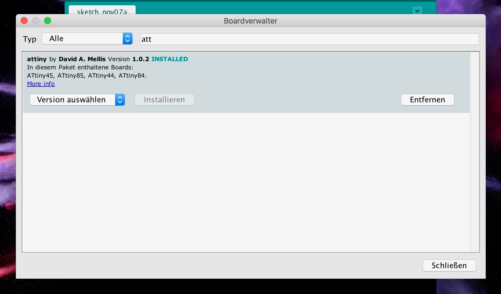
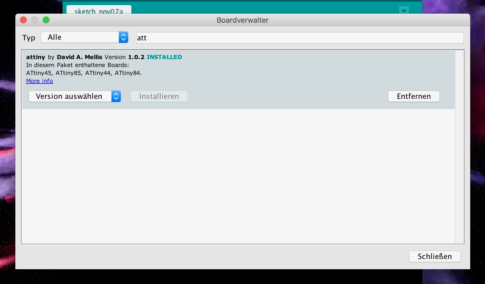

Week 3
Programming
Working with ATtiny and Arduino
ATtiny85 is the smallest micro controller in ATMEL’s AVR family having a less number of pins. It has 8 Pins in total in which 6 pins are for programmable Input/Output. It was developed for less power applications such as battery operated applications.
How To
Step 1
When you want to program the ATtiny85 you first have to set the Arduino Uno in the ISP mode.
Step2
In the next step you have to go to your Board Manager and search for ATtiny and install it. Now it will appear in the end of the Board list.
 

Step 3
After selecting the correct board you also have to check if the right port is chosen.
Step 4
Then you will go to your breadboard, where you have to connect the ATtiny with the Arduino.
Step 5
How you have to connect it in the right way, you can see in the following pictures.
Step 6
After connecting everything right, you have to choose the correct processor, clock and programmer.
Step 7
In the next step you have to burn the Bootloader to reset everything.
Step 8
Now you can start and create your own melody, a tone melody. Therefor you will work with the prefabricated codes.
Step 9
A new window will open. Here you have to erase everything and put in the code you want to work with. In my case I decided do work with the melody of Jingle Bells, which you can find here.
Step 10
Now you only have to change the pins for the LED’s and for the speaker to those you are going to work with.
Step 11
After that you can connect your LED’s and speaker to your ATtiny with help of the breadboard.
Step 12
When everything is connected right you have to verify your code and connect your Arduino to your computer and upload your code to your ATtiny.